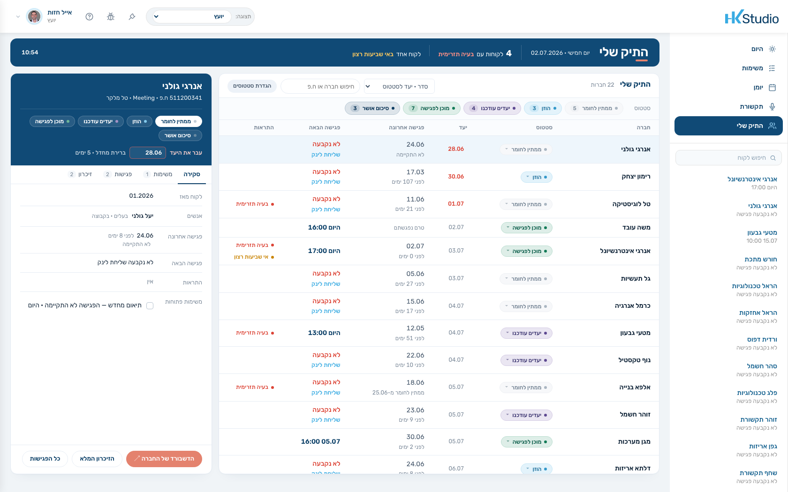
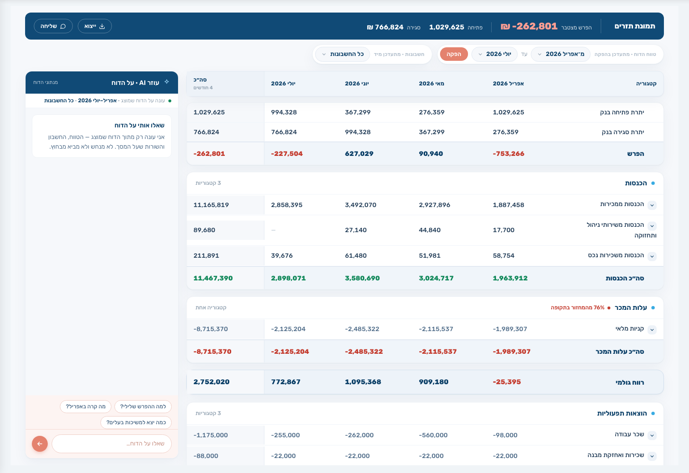
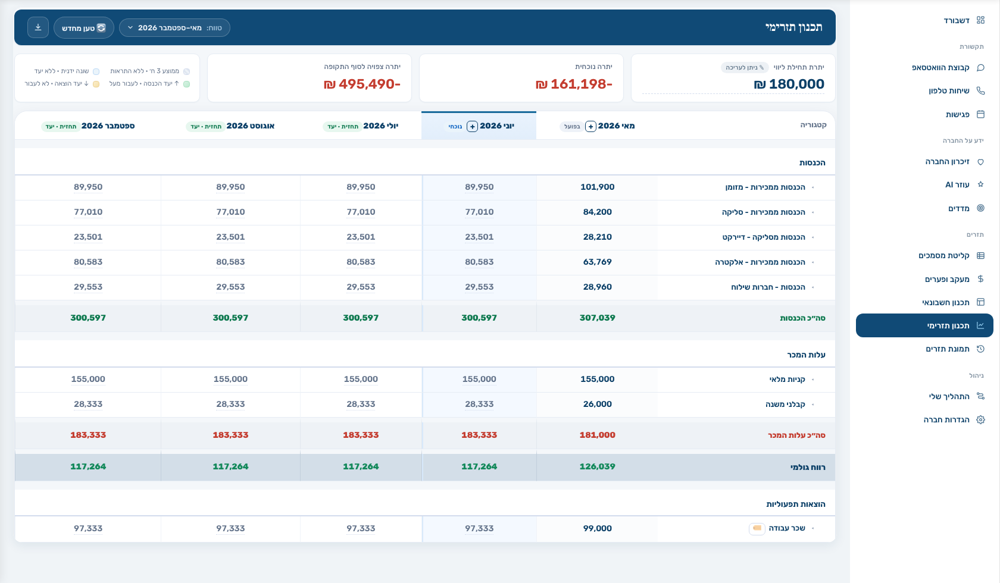
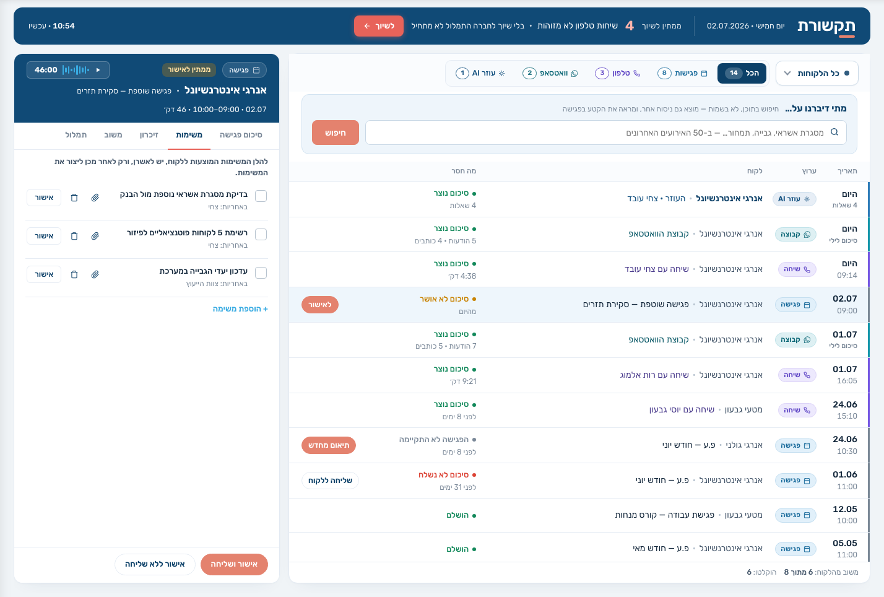
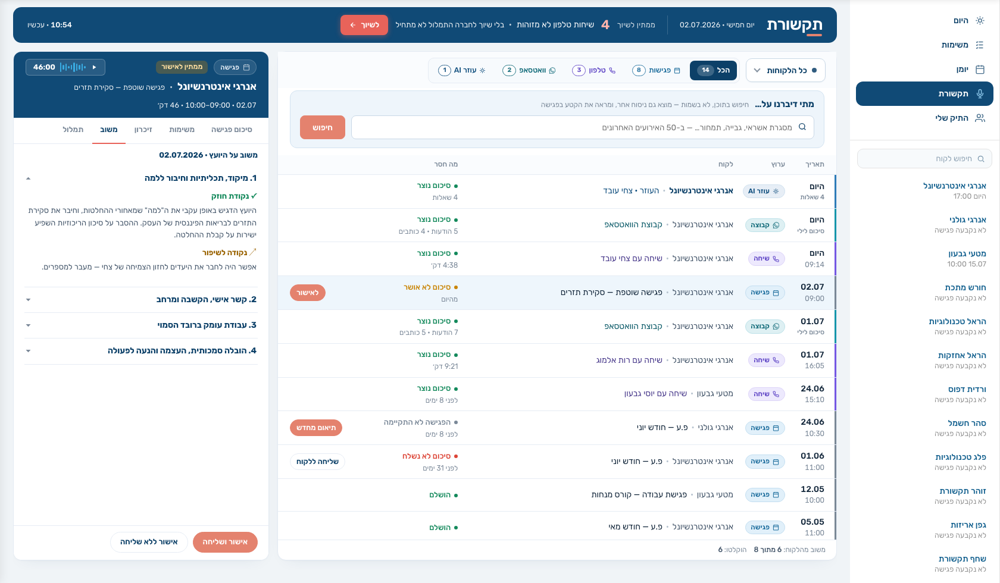
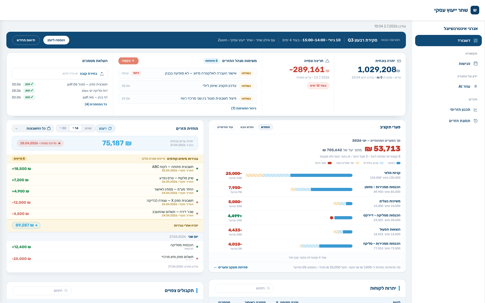

HK · ליועצים עסקיים
AI שמסכם כל פגישה, זוכר כל לקוח ומכין אותך לבאה — ובן אדם שבודק לפני שמשהו יוצא. הכל בשם המשרד שלך.
גלול — המסכים מתחלפים ↓







22 חברות במבט אחד — סטטוס, יעד, פגישה הבאה, ומי צריך אותך היום.
נבנית מחדש בכל פתיחה. סיכום, נקודות פתיחה, ואפילו ״פתח במספרים — צחי מאבד סבלנות מהקדמות״.
כל מה שנאמר — בפגישה, בטלפון, בוואטסאפ, בצ׳אט — נכנס לכרטיס אחד. עם מקור ותאריך לכל שורה.
מה באמת קרה החודש: פתיחה, סגירה והפרש מצטבר, עד רמת הקטגוריה.
חודשים קדימה — בפועל מול תחזית מול יעד, עם יתרות שמתגלגלות.
ההקלטה הפכה לסיכום. המשימות חולצו. הכל ממתין לאישור שלך — ויוצא בשם המשרד שלך.
איך ניהלת אותה: מיקוד, הקשבה, הזדמנויות שחמקו. לעיניך בלבד.
עם הלוגו שלך בפס העליון. בלי שום אזכור שלנו — לא בכותרת, לא בשם הבוט, לא בתפקידים.


אופיר קריספין, מייסד HK
נבחר לקוח, ותראה בדיוק איך המסכים האלה נראים עם הנתונים שלו. בלי מצגת.